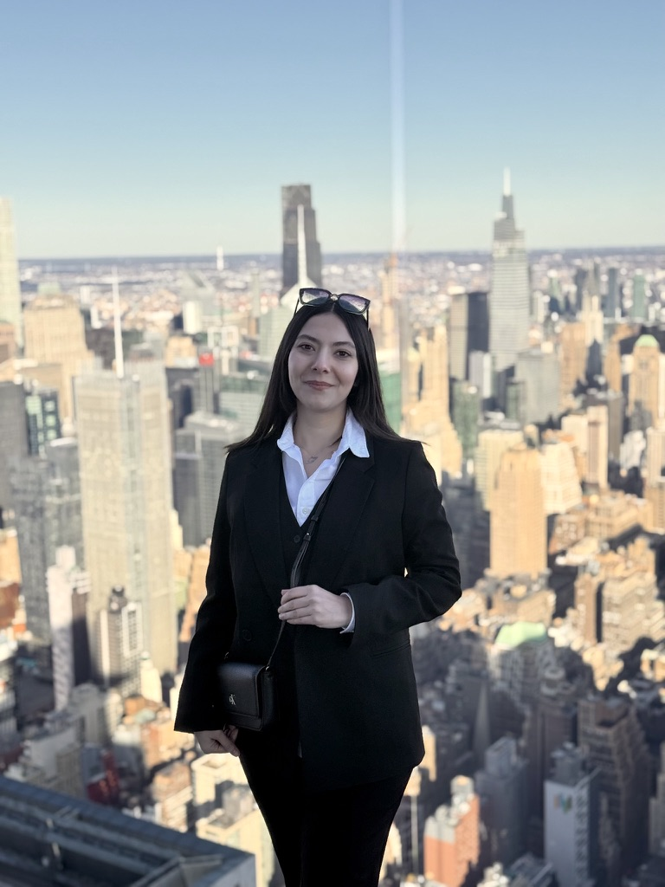

Ph.D. Student in Computer Science at
University of Maryland, College Park
LLMs · Efficient Inference · Reasoning Faithfulness

I am a Ph.D. student in Computer Science at the University of Maryland, College Park, advised by Prof. Soheil Feizi. My research is focused on understanding and improving Large Language Models, with particular interest in their reasoning capabilities, efficiency, and faithfulness.
Before joining UMD, I completed my B.Sc. in Computer Engineering at Sharif University of Technology and spent eight months as a Machine Learning intern at the Institute of Science and Technology Austria (ISTA), where I worked on 3D semantic segmentation of microscopy images.
I am passionate about making AI systems that reason more reliably and efficiently — building benchmarks to probe their weaknesses, and developing methods to accelerate their inference.
I'm always happy to chat about research, collaborations, or just ideas. Feel free to reach out through any of the channels below.